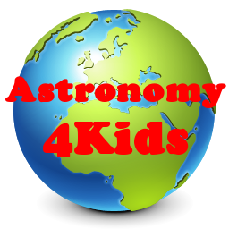

Astronomy4Kids
Do you want to know how a star is born into the universe?
Have you wanted to explore the outer-regions of space all your life?
Well, at Astronomy4Kids we give free facts and information to growing minds. The universe is a vast region and we can't wait to have you here!

What is Astronomy?
Astronomy is branch of science which focuses on celestial bodies and the night sky. The experts in astronomy are called astronomers and they use tools such as telescopes, satelites and computers to map and observe the body that we call the physical universe. However, humans are only just scratching the surface of astronomy and there is lots more to discover in the emptiness of space.

Common Astronomical Terms
Celestial Objects
A celestial object is a term used to describe an object in space. It does not have a specific size, mass or gravitational force
Rotation
A rotation is when a celestial body rotates around its axis. An axis is an imaginary line running from the north to south poles of a planet.
Orbit / Revolution
A revolution or orbit is when a celestial body revolves around another celestial body.
Orbit Period
The Orbit period is the time it takes for a celestial object to complete its orbit/revolution around another celestial object